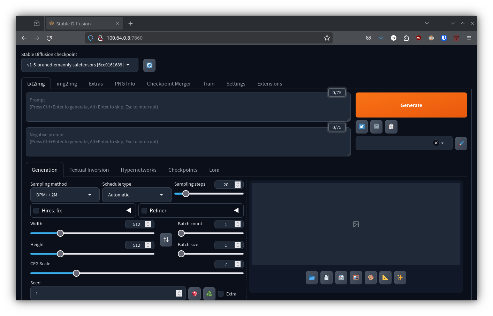

Stable Diffusion: Automatic1111 with Distrobox and Systemd¶
Author: Prayank Swaroop
This post is contributed by a user of JOHNAIC system. Thanks, Prayank.
There are a number of ways Stablediffusion can be run on a machine e.g. Automatic1111, Forge, ComfyUI etc. For this tutorial, we want to run Automatic1111 – on default port 7860, with xformers library. It will be available as an api with basic authentication. We will use distrobox and systemctl to run it as service. We don’t want to use podman since we want to have control over all the files. We don’t want to do volume mounts because that makes using Automatic1111 complicated. This tutorial is especially useful for users who do not have a ‘sudo’ access on their machines.
Setup Automatic1111¶
Log into your user and create a new distrobox for this project
distrobox create --image ubuntu:22.04 --name stable-diffusion --additional-flags "--device nvidia.com/gpu=all"
Enter the created distrobox
distrobox enter stable-diffusion
Once inside distrobox, install system dependencies. Note that you can do sudo because you’re inside distrobox.
sudo apt install -y wget git python3 python3-venv libgl1 libglib2.0-0 google-perftools
Now clone the automatic1111 repository
git clone https://github.com/AUTOMATIC1111/stable-diffusion-webui automatic1111
cd automatic1111
Now run the stable diffusion web ui. Feel free to change passwords below.
bash webui.sh -f --xformers --listen --api --api-auth sd-web-user:password123 --gradio-auth sd-web-user:gradio123
This will take a bit of time to download all the dependencies and models. Once done, you’ll see a line like this
Running on local URL: http://0.0.0.0:7860
You can open your your-johnaic-ip:7860 in your client machine and now you can do your content generation from your laptop!

Now when you close the terminal, you’ll lose your stable diffusion server. We need a more robust way to setting this up as server. We will use systemd for this. Quit the above server for now using ctrl-c.
Setup systemd service¶
To run a distrobox as a systemd service without sudo privileges, you can use a user-level systemd service. User-level services allow you to run services under your user account, without needing root or sudo.
Ensure to exit distrobox by doing exit or ctrl-d. Find out the absolute path of directory where you had webui.sh script. You can get this by pwd command once you’re in the automatic1111 directory. We’ll need this is next steps.
pwd
Now create a systemd unit file. Feel free to replace nano with your favorite editor.
mkdir -p ~/.config/systemd/user/
nano ~/.config/systemd/user/distrobox-stable-diffusion.service
Put the following content into this file
[Unit]
Description=StableDiffusion Container Service
After=network.target
[Service]
ExecStart=distrobox enter stable-diffusion -- /bin/sh -c "<path to automatic1111 folder>/webui.sh -f --xformers --listen --api --api-auth sd-web-user:password123 --gradio-auth sd-web-user:gradio123"
ExecStop=distrobox stop --yes stable-diffusion
Restart=always
RestartSec=5
[Install]
WantedBy=default.target
Make sure to replace <path to automatic1111 folder> and passwords. Here’s quick explanation of what above does:
ExecStart: This is the command to start the Distrobox container. The command you want to run inside the container. (“…webui.sh … ”)
ExecStop: Stop the stable diffusion distrobox
Restart: Ensures the service restarts if it stops.
After creating the service file, reload systemd to recognize the new user service:
systemctl --user daemon-reload
To start and enable the Distrobox container service at user login, we need to do:
systemctl --user enable distrobox-stable-diffusion.service
systemctl --user start distrobox-stable-diffusion.service
You can check the status of the service by running:
systemctl --user status distrobox-stable-diffusion.service
This will show you the logs and the current status of the Distrobox container. If you need to stop or disable the service you can run
systemctl --user stop distrobox-stable-diffusion.service
systemctl --user disable distrobox-stable-diffusion.service
To check detailed logs, use the following command
journalctl --user -f -u distrobox-stable-diffusion.service
Conclusion¶
In this tutorial, we saw how to use flexibility of distrobox to setup stable diffusion on JOHNAIC using automatic1111’s repository. We used systemd to ensure the web ui runs in the background and on user login. Thanks Prayank again for contributing this tutorial!
Published on 16/10/24